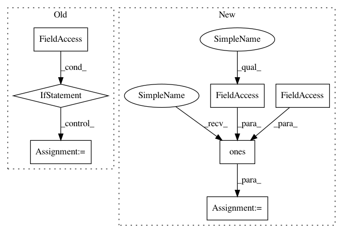

bed0a0ae26451c9897cf1ee0f7302e42eba9b42c,transformer/Models.py,,get_attn_subsequent_mask,#,31
Before Change
attn_shape = (seq.size(0), seq.size(1), seq.size(1))
subsequent_mask = np.triu(np.ones(attn_shape), k=1).astype("uint8")
subsequent_mask = torch.from_numpy(subsequent_mask)
if seq.is_cuda:
subsequent_mask = subsequent_mask.cuda()
return subsequent_mask
class Encoder(nn.Module):
""" A encoder model with self attention mechanism. """
After Change
sz_b, len_s = seq.size()
subsequent_mask = torch.ones((len_s, len_s), device=seq.device, dtype=torch.uint8)
subsequent_mask = torch.triu(subsequent_mask, diagonal=1)
subsequent_mask = subsequent_mask.unsqueeze(0).expand(sz_b, len_s, len_s)
return subsequent_mask
class Encoder(nn.Module):
""" A encoder model with self attention mechanism. """
In pattern: SUPERPATTERN
Frequency: 3
Non-data size: 7
Instances
Project Name: jadore801120/attention-is-all-you-need-pytorch
Commit Name: bed0a0ae26451c9897cf1ee0f7302e42eba9b42c
Time: 2018-08-23
Author: yhhuang@nlg.csie.ntu.edu.tw
File Name: transformer/Models.py
Class Name:
Method Name: get_attn_subsequent_mask
Project Name: PacktPublishing/Deep-Reinforcement-Learning-Hands-On
Commit Name: cbcc3f315c653706ceded6ba42f222616322a3f2
Time: 2018-04-25
Author: max.lapan@gmail.com
File Name: ch03/03_atari_gan.py
Class Name:
Method Name:
Project Name: deeppomf/DeepCreamPy
Commit Name: 08d8e8cfc963c6f345556e84b485a9870b503b2d
Time: 2018-10-20
Author: deeppomf@gmail.com
File Name: decensor.py
Class Name: Decensor
Method Name: decensor_image
Project Name: jadore801120/attention-is-all-you-need-pytorch
Commit Name: bed0a0ae26451c9897cf1ee0f7302e42eba9b42c
Time: 2018-08-23
Author: yhhuang@nlg.csie.ntu.edu.tw
File Name: transformer/Models.py
Class Name:
Method Name: get_attn_subsequent_mask